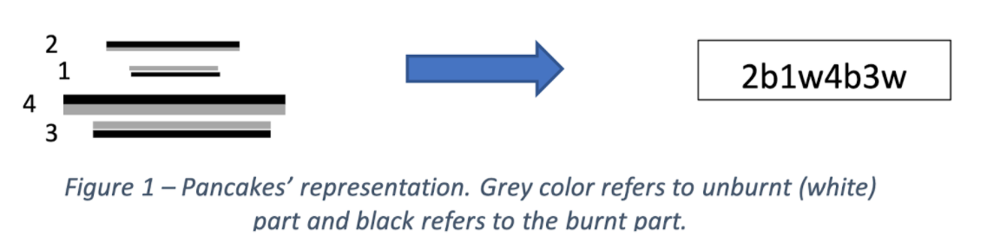

crastamevil6@gmail.com |

 Resume
Resume
Welcome to my page! I am hosting this website on Github Pages while learning (and implementing) HTML and
CSS (crudely) to power it.
My name is Mevil Crasta and I grew up in India, moved to Canada in 2012, and then to the US in 2019.
I completed my bachelors in Mechanical Engineering at the University of Ottawa in 2021. I am currently doing my masters
in Robotics at the University of Delaware.
My interests lie in robotics, programming, AI/ML, and autonomous systems.
Work Experience
Esurgi
Technical Lead
- Led a team of hardware, software, electrical, and mechanical engineers in the development of the Biostabilizer.
UMD College Park
Research Assistant
- Built a cage-locking mechanism for oyester cages using linear actuators powered by servo motors on an Arduino.
Terumo Medical Corporation
NPD Test and Evaluation Co-op
- Class II medical device testing of in-house and competitor products to determine mechanical properties of product.
Sea-Fire Marine
Systems Design Engineering Intern
- Naval fire supression system design for tugboats, catamarans, and multi-deck vessels.
Projects
Perception/Logistic Regression
Trained a supervised machine learning algorithm to binary classify feature data using a perceptron
(with gradient descent) and logistic regression (sigmoid activation).
Agent Reinforcement Learning

Used a Q-learning algorithm to train an agent using rewards and punishments to traverse through a maze from
start to goal state. Agent randomly explores/exploits using an e - greedy method. Uses the Bellman Equation
to update the Q-values for each action at all possible states.
Adversarial Search - AI

Implemented an alpha-beta pruning algorithm to traverse through a tree and choose states intelligently to relax.
Pancake Flipping

Built a robust Breadth-First and A* Search algorithm to solve the pancake flipping problem. Imple- mented a graph
in Python and used a heuristic function based on out-of-place pancakes.
Hip Exoskeleton Suit
Built a 3D CAD model and a MATLAB GUI program to interact with the CAD model. Fed GUI in- formation to SolidWorks
to resize suit proportionally to a person. Used Simulink to analyze model behaviour to different hip kinematics and
dynamics and make it fail-safe.